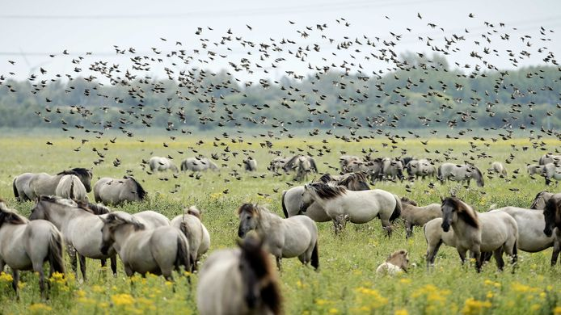
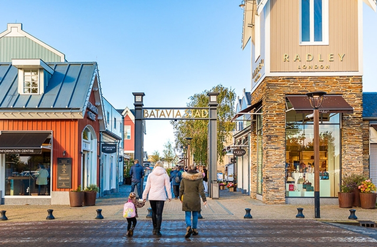

 De Oostvaardersplassen vormen een natuurgebied van zo'n 5600 ha (56 km²) tussen Almere en Lelystad in de Nederlandse provincie Flevoland. Het gebied is ontstaan na de drooglegging van de Flevopolders (1950–1968) en dus relatief jong. De Oostvaardersplassen zijn van internationaal belang als moerasgebied en overwinteringsgebied voor vogels. Het gebied is ruwweg in twee gedeelten te onderscheiden: een nat (ca. 3600 ha) en een droog (ca. 2000 ha) gedeelte. Het droge gedeelte wordt gezien als een geschikte habitat voor grote grazers. Het gebied maakt deel uit van het in 2018 opgerichte Nationaal Park Nieuw Land.
 Batavia Stad Fashion Outlet is de eerste fashion 'outlet' (Factory outlet center) in Nederland, gelegen aan het Markermeer in Lelystad. De outlet is genoemd naar het schip de Batavia uit 1628, waarvan een replica nabij is afgemeerd, bij de Bataviawerf.